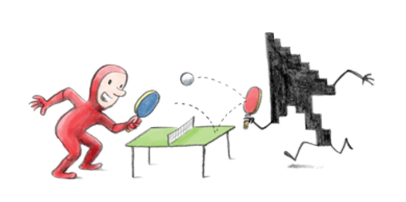
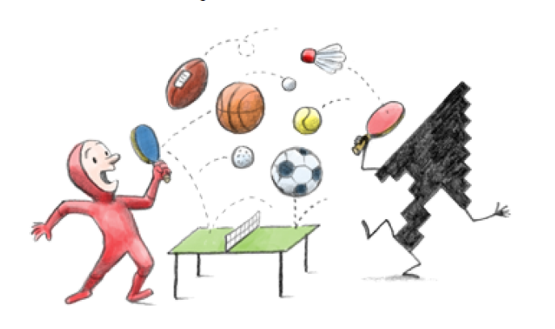
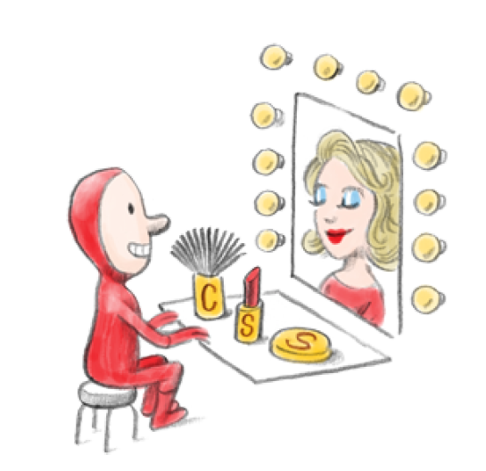
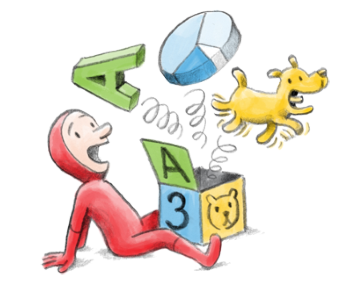
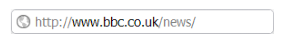
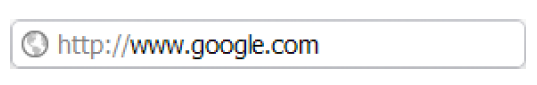
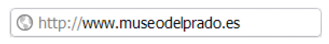
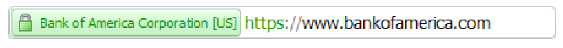
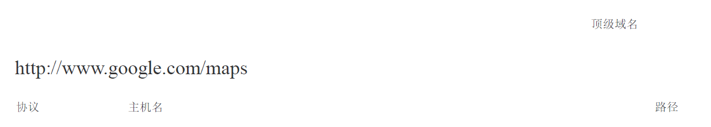

关于浏览器和网络我学到的20件事
前言
此文章转载自Google Chrome Team的文章：20 Things I Learned About Browsers and the Web 国内可能打不开，非常有意思，在此记录下来，以防丢失。
20 Things I Learned About Browsers and the Web 里面的20件事包括了：
- What is the Internet? ：什么是互联网
- Cloud Computing ：云端运算
- Web Apps：网站应用程序
- HTML, Javascript, CSS and more
- HTML5
- 3D in the Browser：浏览器中的3D
- A Browser Madrigal：浏览器大合唱
- Plug-ins：插件
- Browser Extensions：浏览器扩展程序
- Synchronizing the Browser：同步浏览器
- Browser Cookies：浏览器cookies
- Browsers and privacy：浏览器与隐私
- Malware, phishing and security risks：恶意软件、网上诱骗和安全风险
- 新一代的浏览器如何帮您抵御恶意软件和网上诱骗
- Using web addresses to stay safe: 使用网址，确保安全
- IP address and DNS：IP地址和DNS
- Validating identities online：在线身份验证
- Evolving to a faster web：向更快的网络时代迈进
- Open source and browsers：开放源代码和浏览器
- 19 thins later: 最后一个须知…
如今许多人都离不开网络，我们只要动动手指就能获得全球信息，并且在瞬间接触到世界各地的人和活
动。
所有这些超强体验都归功于开放的互联网。世界上的任何人都能通过任何已联网的设备，通过浏览器上网。
但是浏览器和网络的工作原理究竟是怎样的呢？万维网是如何发展到如今我们所了解和喜爱的样子的？我们
需要了解哪些事情才能安全有效地浏览网络？
“我了解到的关于浏览器和网络的 20 件事”是一个简短的指南，面向的是所有想要了解浏览器和网络基
本知识的人。本指南介绍了以下内容：
首先我们会介绍一下互联网，这是网络存在的基础。我们还会介绍当今网络是如何通过云计算和网络应
用程序运作的。
接着，我们会介绍 HTML 和 JavaScript 等网页构建基础，并且回顾它们的发明和发展对于您日常访问
的网站起到了怎样的影响。我们还会介绍现代浏览器，以及它如何帮助用户更安全地访问网络。
最后，我们会展望在浏览器和网络技术领域令人兴奋的创新，我们相信在未来可以获得更快速更让人身
临其境的在线体验。
虽然网络生活让我们觉得自由自在而且无所不能，但是我们还是应该了解更多些相关知识。正如我们想
要了解现实生活中居住小区的基本情况（例如水电安全、注意事项、周边服务等），我们也越来越有必要了
解关于在线生活的一系列类似信息。这就是我们编写本指南的用意。在谈到浏览器功能时举的很多例子中，
我们经常会提到“Chrome 浏览器”这款大家熟知的开放源代码浏览器。我们希望您在阅读本指南时享受到和我
们编写时一样的乐趣。
祝您浏览愉快！
“Google Chrome 浏览器”小组谨此向插图绘制者克里斯托弗•尼曼 (Christoph Niemann) 致上由衷谢意
2010 年 11 月
What is the Internet? 什么是互联网
要知道什么是互联网，就要知道什么是 TCP/IP

互联网究竟是什么？对某些人来说，互联网就是用来与朋友交流、读新闻、购物和玩游戏的。而对其他
一些人来说，互联网则可能是他们当地的宽带提供商，
或者是城市之间乃至越洋过海传输数据的地下电缆和光纤。谁的看法正确呢？
要讨论这一点，我们不妨从互联网诞生的 1974 年开始说起。那一年，几位天才的计算机研究人员发明
了一种称为“互联网协议组”的技术，简称“TCP/IP”。
TCP/IP 制定了一套规则，可以让不同的计算机彼此“交谈”，并且发送和接收信息。
TCP/IP 有点类似于人类之间的交流：人们在交谈时会按照语法规则组织语言，从而确保彼此可以相互理
解和交流看法。同样地，TCP/IP 也提供了一套交流规则，从而确保互连设备可以彼此了解，以便发送和接收
信息。随着这种互连设备从一个房间扩展到许多房间，再扩展到许多建筑物、城市乃至国家，互联网便诞生
了。
互联网的早期创建者发现，如果先将数据和信息分成小块独立发送，然后再重新组合，那么传送效率会
更高。这些小块称为数据包。所以，当您通过互联网发送电子邮件时，完整的电子邮件内容会先分成许多数
据包发送到收件人邮箱，然后再重新组合。当您在 YouTube 等网站观看视频时，情况同样如此：视频文件会
分成许多数据包，从世界各地的多个 YouTube 服务器发送出去，然后重新组合，还原成您在浏览器中看到的
视频。
网速如何？如果将互联网的流量比作水流，那么互联网的带宽就相当于每秒流过的水量。所以工程师们
所说的带宽实际上是指通过您的互联网连接每秒所能发送的数据量。这是反映您连接速度的一项指标。如
今，凭借更精良的实体基础设施（例如光纤电缆，其传输速度接近光速），网络连接的速度可以更快，而且
可以更好地在物理介质上进行信息编码，即使是铜线这样的老式介质也完全没问题。
互联网是一个令人着迷的高度技术化体系，但是对于我们大多数人来说，其实很容易使用，完全不必考
虑其中所涉及的电缆和方程式之类复杂的东西。
另外，互联网也是我们所熟知和喜爱的万维网存在的支柱：正是互联网连接实现了互连的网页和应用程序，
带我们走进了一个不断发展的开放世界。事实上，如今网络中的网页数量可能已经像人脑中的神经元或者银
河系中的星星那么多了。
在接下来的两章中，我们会介绍如今的网络是如何通过云计算和网络应用程序在现实生活中应用的。
Cloud Computing 云端运算
为什么卡车碾过我的笔记本也没关系
互联网时代的现代计算机技术是相当神奇和卓越的。当您抱着您的笔记本电脑宅在家里看 YouTube 视频
或使用搜索引擎时，实际上利用了遍布全球的无数台计算机的集体力量，正是它们远程提供了您所需的信
息。这简直就像有一台大型超级计算机随时听候您的差遣，而这一切都归功于互联网。
这种现象就是我们通常所说的“云计算”。如今我们都可以在网络上读新闻、听音乐、购物、看电视以及
存储文件。

在我们所生活的城市中，几乎每个博物馆、银行和政府部门都有自己的网站。结果如何呢？我们可以通过这
些网站进行付帐和预约等活动，因此节省了排队和打电话的时间。许多日常事务可以转由网络进行处理，这
样我们可以生活得更加丰富多彩。
云计算还有其他一些好处。几年前，如果计算机出现了病毒感染或硬件故障之类的问题，很多人都会担
心文档、照片和文件丢失。如今，我们已不再将数据存储局限在个人计算机中，而是迁移到网络上，将数据
在线储存到“云”中。如果您在线上传照片、存储重要文件并使用 Gmail 或 Yahoo! Mail 这样网络电子邮件，
那么即使一辆 18 轮大卡车碾过您的笔记本电脑，您的所有数据仍会安全地保存在网络上。不论您在世界的
哪个角落，都可以通过任何一台接入互联网的计算机访问这些数据。

Web Apps 网站应用程序
或者说 “生命、自由以及对应用程序的追求”

如果您玩网络游戏，使用网上照片编辑器或者依赖“Google 地图”、Twitter、Amazon、YouTube 或
Facebook 等基于网络的服务，那么您就已经是网络应用程序世界中的一个活跃分子了。
网络应用程序究竟是什么？跟我们有什么关系呢？
“App”是应用程序 (application) 的缩写。应用程序也称为程序或软件。以往，开发应用程序是为了完成综
合密集型的任务，例如财务管理或文字处理。现在，在网络浏览器和智能手机的网络世界中，应用程序通常
是较为灵活的程序，专门针对单一任务。尤其是网络应用程序，可以在网络浏览器中运行这些任务，并且往
往能够提供丰富的互动体验。
“Google 地图”就是一个网络应用程序的绝佳示例。它专门用来处理一项任务：在网络浏览器中提供实用
的地图功能。您可以平移和缩放地图，搜索大学或咖啡厅，并且获得行车路线等等。您需要的所有信息都会
根据您的要求动态显示在网络应用程序中。
我们可以总结出网络应用程序的四大优点：
我可以从任何地方访问自己的数据。
在过去的桌面应用程序时代，数据通常存储在计算机的硬盘中。如果我外出度假，但是将计算机留在了家
里，那么就无法查收电子邮件、查看照片或访问任何需要的数据了。而在网络应用程序的新时代，我的电子
邮件和所有数据都存储在网络上。您可以使用任何一台可以上网的计算机，通过网络浏览器获取所需的数
据。我的应用程序总是最新版本。
我今天使用的 YouTube 是什么版本？明天呢？答案是：永远都是最新的。网络应用程序会自动更新，所以总
是只有一个版本：包含了所有最新功能和改进的最新版本。没有必要每次都手动升级到新版本，也不必在花
费大量安装时间后才能使用。可以在所有安装了网络浏览器的设备上使用。
对于传统的计算机技术，有些程序只能在特定的系统或设备上运行。例如，许多为 PC 编写的程序无法在苹
果机上运行。为每种系统或设备开发相应的软件不仅耗时，而且成本很高。相反，网络则是一个开放的平
台。任何人都可以在连接到网络的设备上通过浏览器访问网络，无论这样的设备是笔记本电脑、桌面计算机
还是手机。这意味着我即便使用朋友的笔记本电脑或网吧的计算机，也能运行我喜爱的网络应用程序。更加安全。
网络应用程序是在浏览器中运行的，无需下载到自己的计算机上。由于应用程序代码与计算机代码是分开
的，因此网络应用程序不会影响我计算机上的其他任务，也不会影响计算机的总体性能。这也表示我在面对
病毒、恶意软件和间谍软件等威胁时，可以得到更好的保护。
HTML, Javascript, CSS and more
AJAX 不再是从前的样子了
网页都是用 HTML 语言编写的，这是一种网络编程语言，可以指示浏览器如何在网页上构建和展现内
容。换句话说，HTML 为网页提供了构建基础。很长一段时间以来，这些构建基础都很简单，而且是静态
的，只包含文本行、链接和图片。
如今，我们的要求更高了，例如会想要在线下棋或者无缝滚动浏览周边地图，但不想每下一步棋或每滚
动一下地图都要等待整个网页重新载入。
这种动态网页的构想，从 JavaScript 脚本语言发明伊始就已经萌生了。各种主流网络浏览器都支持
JavaScript，这就意味着网页中可以包含更多重要的实时互动内容。例如，如果您填写了一张在线表单，然后
点击“提交”按钮，那么网页就会使用 JavaScript 实时检查您输入的内容，并且在发现您填错时立即提醒您。


但是实际上，我们现在所了解的动态网页是在 JavaScript 引入了 XHR(XMLHttpRequest) 后才实现的，
然后首先应用到 Microsoft Outlook 网络版、Gmail 和“Google 地图”等网络应用程序中。XHR 无需重新载入
整个网页，即可更改网页的各个部分，包括游戏、地图、视频、在线用户调研等。这样，网络应用程序也因
此变得更快速，响应也更及时。

在引入 CSS（层叠样式表）后，网页拥有了更丰富的表现力。CSS 可让程序员以轻松而有效的方法来定
义网页布局，并通过颜色、圆角、渐变和动画等设计元素美化网页。
网络程序员通常将 JavaScript、XHR、CSS 以及其他几种网络技术的强力组合称为 AJAX（异步
JavaScript 和 XML）。HTML 也在持续发展，新版 HTML 标准中不断加入新的功能和改进。
无数的技术人员、点子专家、编程人员和组织创造了种种网络技术，并确保 Internet Explorer、Firefox、
Safari 和 “Google Chrome 浏览器”等网络浏览器支持这些技术，正是这些人的不懈努力，网络世界才有了今
日的繁荣。网络技术与浏览器之间相辅相成，把网络打造成一个开放友好的构建平台，供网络开发人员开发
各种实用而有趣的网络应用程序，以便我们在日常生活中使用。
HTML5
或在开始，还没有< VIDEO >的时候
在 HTML 诞生 20 多年后，我们仍在探究这样的问题：什么是网络？未来的网络会变成什么样？对于我
们这些用户来说，什么样的功能和应用程序才是有趣、实用甚至是不可或缺的呢？开发人员需要借助什么工
具来开发优秀的网站和应用程序？最后，如何在网络浏览器中实现网络的种种优势？
对上述问题的探究催生了最新版本的 HTML，也就是 HTML5。它具备了一系列新功能，可以帮助网页
设计人员和开发人员们开发强大的下一代网络应用程序。以 HTML5 中的

互联网用户只有安装了称为“插件”的额外软件，才能在浏览器中观看视频。而不久之后，轻松观看视频就成
了广大用户迫切需要的一项功能。利用 HTML5 中引入的
HTML5 还提供了其他一些很棒的功能，例如离线功能（用户即使在没有网络连接的情况下，也能与网
络应用程序互动）以及拖放功能。例如在 Gmail 中，用户只要将桌面上的文件拖放到浏览器窗口中，即可瞬
间完成附件添加操作。
HTML5 就和网络本身一样， 也在根据用户的需求和开发人员的构想而不断发展。作为一种开放式标
准，HTML5 结合了网络显著的一些优势：不受地域限制，都能在装有新一代浏览器的设备上运行。
但是，就像只有在高清电视机上才能观看高清电视节目一样，用户必须使用兼容 HTML5 的最新版浏览器，
才能访问那些采用了 HTML5 功能的网站和应用程序。好在有很多不同的浏览器可供互联网用户选择，买电
视机要花钱，浏览器可是能免费进行下载的哦。
3D in the Browser：浏览器中的3D
更有深度的浏览

3D 图形与动画的确魅力无穷，因为它们能够很好地展现所有细节，例如光影、倒影与逼真的纹理等。
然而，迄今为止仍难以实现令人瞩目的 3D 体验，尤其是在互联网上。
为什么会这样呢？主要原因是，要在游戏和其他应用程序中营造 3D 体验，就必须用海量的数据来显示
复杂精细的纹理和形状。以前，大多数常用系统都因为互联网带宽和计算能力方面的限制，无法处理如此海
量的数据。
不久之前，一切都改变了：基于浏览器的 3D 时代来临了！
如今的宽带网络帮助解决了带宽需求问题。许多家庭和办公室现在都安装了宽带，带宽远超十年前。因
此，可以通过互联网发送大量数据，从而达到在浏览器中体验逼真 3D 效果的要求。而且，如今的计算机在
性能上也远非从前可比：处理器与内存得到了显著提升，即便是目前普通档次的笔记本电脑或台式计算机，
也能处理复杂的 3D 图形。
但是关键还在于浏览器功能有了长足的发展，否则单纯依靠宽带或者计算能力都是无济于事的。许多现
代浏览器都采用了开放网络技术，如 WebGL 和 3D CSS。凭借这些技术，网络开发人员可以为网络应用程
序打造出酷炫的 3D 效果，而我们无需安装其他插件就能体验这种效果。最重要的是，许多现代浏览器现在
都能采用了一种称为“硬件加速”的技术。这意味着浏览器可以使用图形处理单元（即 GPU）加快计算速度，
以满足同时呈现 3D 和日常 2D 网页内容的需要。
那么为什么浏览器对 3D 的支持这么重要呢？因为现在 3D 技术已经与 HTML5、JavaScript 和其他强大
的新技术一起成为了网络开发的常用工具，网络开发人员可以使用这些技术开发强大的下一代网络应用程
序。而对用户而言，这意味着可以通过更好的新方式直观地查看实用信息，在网上体验 3D 环境和玩 3D 游
戏时能够获得更多乐趣。
最重要的是，浏览器对 3D 的支持为网络应用程序带来了种种好处：您能够与全球的朋友们分享、协作
和个性化最新的应用程序。毋庸置疑，人人都能获得更多数据，体验更多乐趣。
A Browser Madrigal：浏览器大合唱
新老浏览器的对决

老古董般的浏览器与现代浏览器
无法并存：
现代浏览器速度快、功能全、安全好
老版浏览器运行慢，弱点一大堆
一有恶意攻击就疲软。
大多数互联网用户可能尚未意识到，过时的旧版网络浏览器会对我们的网络生活，尤其是网络安全造成
多大的负面影响。您肯定不愿意长年累月都开着一辆轮胎磨秃、刹车失灵而且发动机常常罢工的老爷车。同
样，您也不应该每天使用过时的旧版浏览器来访问网页和网络应用程序。
赶快升级到最新版本的现代浏览器吧，例如 Mozilla Firefox、Apple Safari、Microsoft Internet
Explorer、Opera 或者“Google Chrome 浏览器”。这样做是很有必要的，理由有以下三点：
第一，旧版浏览器通常无法更新最新的安全补丁和功能，因而极易受到攻击。浏览器的安全漏洞可能导
致用户密码被盗、恶意软件偷偷侵入计算机甚至其他更严重的后果。而最新版本的浏览器能帮助您抵御网上
诱骗和恶意软件等安全威胁。第二，网络的发展十分迅速。旧版浏览器可能无法支持当今网站和网络应用程序中的许多最新功能。只
有最新版本的浏览器在速度方面进行了改进，再加上对 HTML5、CSS3 以及快速 JavaScript 等现代网络技术
的支持，可以让您快速地访问网页和运行应用程序。

- 第三，旧版浏览器阻碍了网络创新的步伐。如果大量的互联网用户都墨守旧版浏览器，网络开发人员就
不得不在设计网站时兼顾新旧技术。面对有限的时间和资源，他们不得不为了照顾旧版浏览器的低标准，而
停止为现代浏览器开发创新性的下一代网络应用程序。（想象一下吧，这就好比如今的高速公路工程师们被
迫按照老爷车的安全行驶标准去设计高速公路。）因此，无论对于广大网络用户还是网络创新而言，过时的
浏览器都是有百害而无一利的。
如果您对自己老迈的浏览器依依不舍，这也是无可厚非的。有些情况下，您可能无法升级浏览器。如果
您发现在办公用计算机上无法升级浏览器，请与贵公司的 IT 管理员联系。如果您无法升级旧版 Internet
Explorer，可以使用“Google Chrome 浏览器内嵌框架”插件，在 Internet Explorer 中引入“Google Chrome 浏
览器”的部分功能，从而获得一些现代网络应用程序的先进功能。
过时的旧版浏览器不仅会损害用户的利益，而且阻碍了整个网络的创新步伐。因此，请您务必花一点时
间将您喜爱的现代浏览器升级到最新版本。

Plug-ins：插件
吃饺子要蘸醋

在万维网发展的早期阶段，第一版 HTML 无法传输像视频这样高级的内容，基本上只限于文本、图片
和链接。
为了打破早期 HTML 的限制并且传输更多互动内容，插件应运而生。
插件是一种附加软件，专门用来处理特定类型的内容。例如，用户可以下载并安装 Adobe Flash Player 等插
件，以便观看包含视频或互动游戏的网页。
插件与浏览器之间的互动程度如何？说来奇怪，它们之间几乎没有互动。插件模式很像电视上的画中
画：浏览器在网页上为插件界定一个明确的空间，然后就置身事外了。插件可以自由运用这个空间，完全不
受浏览器的影响。
这种独立性意味着一个特定的插件可以适用于多种不同的浏览器。然而，这种普遍性也让插件成为了浏
览器安全攻击的主要目标。如果您运行的不是最新版插件，那么您的计算机会更容易遭到安全攻击，因为过
时的插件不包含最新的安全修补程序。
我们今天使用的插件模式主要还是沿袭自早期的网络。不过，网络社区目前正在寻找插件现代化的新用
途，例如通过巧妙的方法更加无缝地集成插件，以便对插件内容进行搜索和链接，并且可以让插件与网页的
其余部分互动。
更重要的是，现在一些浏览器供应商和插件提供商会展开合作，共同保护用户免受安全风险。例如，“Google
Chrome 浏览器”小组和 Adobe Flash Player 团队已经展开合作，将 Flash Player 集成到了浏览器
中。“Chrome 浏览器”的自动更新机制有助于确保 Flash Player 插件永不过时，并且一直收到最新的安全修补
程序和补丁。
Browser Extensions：浏览器扩展程序
浏览器变身“百变金刚”
浏览器扩展程序可让您对浏览器添加新的功能，名副其实地“扩展”浏览器。
这意味着您可以对浏览器进行自定义，添加最重要的功能。您可以将扩展程序视为在浏览器现有功能的
基础上增加新的强大功能。
这些功能可大可小，完全取决于您的需要。例如，您可以安装一个汇率换算扩展程序，安装完成后，浏
览器地址栏旁就会显示一个新的按钮。
点击该按钮即可将当前网页上的所有价格换算成您指定的币种。如果您是一个习惯在网上规划行程和预订的
背包客，那么这款扩展程序就很有帮助。您可以在所有网页上使用这类扩展程序的类似功能。

浏览器扩展程序也可以在网页外部自行运行。电子邮件通知扩展程序可以集成到浏览器工具栏中，在后
台检查您的电子邮件帐户中是否收到了新邮件，然后通知您。在这种情况下，无论您在浏览什么网页，该扩
展程序总是会在后台运行。这样，您就无需在一个独立窗口中登录电子邮件来查收新邮件。
浏览器扩展程序刚诞生时，开发人员通常必须使用一些不常见的编程语言或者大型的主流编程语言（如
C++）编写这些程序。这对于工作量、时间和专业的知识的要求都很高。向浏览器添加更多的代码还会增加
安全隐患，因为这为攻击者提供了更多可乘之机。以前有些扩展程序的代码晦涩难懂，使得扩展程序背负了
导致浏览器崩溃的恶名。
如今，大多数浏览器都允许开发人员使用友好的基础网络编程语言开发扩展程序，例如 HTML、
JavaScript 和 CSS。这些语言同时也是开发当今大多数网络应用程序和网页所用的语言，因此如今的扩展程
序与网络应用程序和网页之间的兼容性更好。扩展程序开发起来更加迅速、简单和安全，而且会随着作为开
发基础的网络标准一起不断完善。
要找新的扩展程序，可以查看浏览器的扩展程序库。您会在其中找到成千上万的扩展程序，它们能带给
您更高效或更有趣的浏览体验，有些可让您在搜索时在网页上标注突出显示内容以及做笔记；有些可通过浏
览器界面为您带来精彩的体育赛事实况报道。
Synchronizing the Browser：同步浏览器
又有卡车碾过我的笔记本了

恭喜您，您现在已经步入“云”中了！您在收发电子邮件、听音乐以及做每一件事时，几乎都用到了网络
应用程序。无论身在何处，您只要通过任意一台可以上网的计算机，就可以在线保存重要文档、照片和各种
文件了。
就算是一辆 18 轮的大卡车呼啸着碾碎您的笔记本电脑，您也不会丢失任何数据。明智的您早已将自己
的重要信息保存到网上，这时候您只要找到另一台可以上网的设备，就可以拿到重要信息并继续工作了。
但是，像书签、浏览器扩展程序和浏览器偏好设置这些日常使用的内容会怎么样呢？它们会随着您的笔
记本电脑一起灰飞烟灭吗？
以前是会的。那时候您必须重新寻找您喜爱的各种扩展程序，重新收集曾经辛辛苦苦添加到书签的各个
网站。但现在再也不用这么麻烦了！如今，像 Firebox 和“Chrome 浏览器”等许多浏览器都已着手开发一项称
为同步的功能。同步功能可让您将浏览器设置在线保存到“云”中，这样就算您的计算机融化了，这些设置也
不会丢失。
另外，如果您要用到多台计算机（比如工作时使用笔记本电脑，在家使用台式计算机），有了同步功能
就会非常方便。您不必手动地为每一台计算机重新创建收藏网站的书签，也不必重新配置浏览器。
只要浏览器具备同步功能，您在一台计算机上所作的更改就会在几秒内自动在其他同步的计算机上反映出
来。
以“Chrome 浏览器”为例，同步功能可以将所有的书签、扩展程序、偏好设置以及主题保存到您的
Google 帐户。您在使用其他任何可以上网的计算机时，只需打开“Chrome 浏览器”，然后通过浏览器的同步
功能登录您的 Google 帐户。瞧！您喜爱的所有浏览器设置这时就可以在新的计算机上使用了。
无论您要使用多少台计算机，只要可以上网并且安装了可同步到“云”的现代浏览器，就万事俱备了。哪
怕这些计算机都被传说中的卡车压坏也没关系。
Browser Cookies：浏览器cookies
多亏了记录功能
“Cookie”看起来不像是一个技术名词，但却为互联网用户提供了一项至关重要的功能：记录访问过的网
站或正在访问的网站。
Cookie 是由您访问的网站向您的浏览器发送的一小段文本。其中包含了您希望该网站记住的关于访问活
动的信息，例如首选语言或其他一些设置。浏览器会保存这些数据，并在您下次访问该网站时调用它们，为
您提供更方便和个性化的访问体验。
例如，您在访问一个电影网站时表示某喜剧片最受您的喜爱，那么该网站所发送的 Cookie 就会记录这一
点，这样当您下次访问时，就会看到很多的喜剧片。
在线购物车也使用 Cookie。例如，您在收费电影网站浏览 DVD 时，会发现在不登录的情况下也可以将
DVD 添加到购物车中。即使您在该网站的各个不同页面上浏览，您的购物车也不会“忘记”您挑选的 DVD，
因为您的选择已经通过浏览器的 Cookie 保存下来了。另外，在线广告也会使用 Cookie 记录您的兴趣爱好，
并在您访问网页时显示相关的广告。
但是有些人不喜欢使用 Cookie，因此大多数现代浏览器都提供了管理 Cookie 的功能，以满足不同用户
的需要。您可以针对不同网站设置用于管理 Cookie 的特定规则，从而更好地保护自己的隐私。这就意味着
您可以选择自己信任的网站，只允许这些网站的 Cookie，而阻止其他网站的 Cookie。Cookie 的类型有很
多，包括只在某个特定浏览会话期间存在的“仅限会话的 Cookie”，以及可持续多个浏览器会话的“永久
Cookie”。
因此，现代浏览器通常都提供了微调控制方法，可让您根据自己的偏好设置不同类型的 Cookie，例如将永久
Cookie 设置为单一会话 Cookie。
在“Google Chrome 浏览器”中，“选项”菜单中提供了一个特殊的直接链接，点击后即可转到 Adobe Flash
Player 的存储设置管理器。您可以通过该链接方便地控制由 Adobe Flash Player 存储的本地数据（通常也称
为“Flash Cookie”），这些数据包含了您访问过的基于 Flash 的网站或应用程序的信息。就像您可以管理浏览
器 Cookie 一样，您也能轻松地控制 Flash Cookie 的设置。
Browsers and privacy：浏览器与隐私
在浏览器中保护自己的隐私

安全与隐私是紧密相关的，但并不完全等同。
您可以想象一下自己家里的安全和隐私保障措施：门锁和报警系统帮助您防盗，而窗帘和百叶窗可以防
止路人窥视您的生活隐私。
同样，浏览器的安全保障可帮助您抵御恶意软件、网上诱骗和其他在线攻击，而隐私保护功能则可在您
的计算机上帮助保护您在浏览方面的隐私。
让我们更深入地了解一下隐私。打个比方：您是跑步爱好者，每天都要跑上几里路。如果您随身携带一
个 GPS 设备来记录每天的跑步数据，就可以在这个设备上创建一份跑步数据日志：您跑到什么地方、跑了
多远、平均速度是多少以及消耗了多少卡路里。
而当您浏览网页时，计算机也会在本地生成并存储一份类似的浏览器数据日志，其中包括关于您所浏览
网站的记录、发送到浏览器的 Cookie 以及您下载的所有文件。如果您将浏览器设置为保存密码或表单数
据，那么这些数据也会存储在您的计算机上。
有些人可能没有意识到，所有这些浏览数据都是可以随时从计算机中清除的。只要通过浏览器的“选
项”或“偏好设置”菜单，就能轻松完成这样的操作。（不同浏览器的菜单名称会有所区别。）事实上，大部分
最新版的现代浏览器还提供了一种“隐私”或“隐身”模式。例如，在“Chrome 浏览器”的隐身模式下，您浏览的
所有网页均不会显示在浏览历史记录中。另外，在您关闭所有已打开的隐身窗口后，系统会删除所有新的
Cookie。如果您与其他人共用自己的计算机，或者在当地图书馆或网吧使用公共计算机，那么这种模式就非
常方便。
通过浏览器中的所有这些隐私控制功能，您可以控制计算机本地上的浏览数据或由浏览器发送给网站的
特定数据。但浏览器的隐私设置无法控制另外的这些网站获取您的数据，例如您以前在这些网站上提交的个
人信息。
当然，也有一些方法可以限制网站在您浏览的同时获取某些信息。很多浏览器可以让您针对不同的网站
调整隐私偏好设置，并且自行选择 Cookie、JavaScript 和插件等特定数据。例如，您可以设置相应的规则，
只允许自己信任的一系列网站的 Cookie，并让浏览器阻止其他所有网站的 Cookie。
在隐私与效率之间总会存在一点冲突。收集来自广大用户的实际汇总数据和反馈确实有助于改善产品和
用户体验。关键是在坚持严格的隐私标准的同时，在隐私与效率之间找到最佳平衡点。
下面以浏览器 Cookie 作为实际的例子来说明这一点。一方面，如果使用 Cookie，您经常访问的网站就
能够记录您购物车中的商品，让您保持登录状态，并且根据您以前的浏览记录提供更实用、更个性化的浏览
体验。
而另一方面，允许浏览器 Cookie 就意味着网站会收集和记录您先前浏览过的信息。如果您愿意，可以
随时选择阻止 Cookie。这样，您下次希望对浏览器隐私设置进行微调时，可以在浏览器的“选项”或“偏好设
置”菜单中修改相应的隐私设置。
Malware, phishing and security risks：恶意软件、网上诱骗和安全风险
披着羊皮的狼
当您在闹市使用自动取款机时，可能会四下张望，以确保没有人偷窥您的密码或窃取现金。其实，您或
许应该先检查一下自动取款机是不是真的。当您浏览网页和进行网上交易时，需要提防两大安全风险：恶意
软件和网上诱骗。某些个人或组织会利用这些攻击手段，企图窃取您的个人信息或侵入您的计算机。

那么，网上诱骗和恶意软件攻击究竟是什么？
网上诱骗是指某些人假冒他人（通常是通过虚假网站）骗取您的个人信息。（“网上诱骗”的说法是从英
文中的“钓鱼”一词演化来的，因为这些图谋不轨的人像钓鱼一样投下诱饵，然后等别人上钩。）网上诱骗的
惯用手段是这样的：攻击者向您发送一封电子邮件，但是表面上看好像是由您所熟悉的银行或网络服务提供
商发送的。这封邮件的主题可能是“请更新您的银行个人信息！”邮件中包含了网上诱骗链接，您点击后以为
自己进入的是银行网站，实际却是虚假网站。这个虚假网站会提示您登录，这样您就在不经意间向攻击者透
露了自己的银行帐号、信用卡号、密码或其他敏感信息。
恶意软件则有所不同，通常会在您不知道的情况下安装到您的计算机上。这种软件可能会提示您下载一
个防病毒软件，而实际上它本身就是病毒。或者，有些网页在您访问时甚至不做任何提示就将软件安装到了
您的计算机上。这种软件的真正意图是从您的计算机中窃取信用卡号或密码，有时还会损害您的计算机。恶
意软件安装到您的计算机中以后，不仅难以删除，而且还可以自由访问它发现的所有数据和文件，并将这些
信息发往别处，这通常会对您的计算机造成严重损害。
最新版的现代网络浏览器是抵御网上诱骗和恶意软件攻击的第一道防线。例如，大多数现代浏览器都能
帮助您分析网页，以寻找可能存在恶意软件的迹象，并在发现它们时提醒您。
另外，攻击者可能并不总是利用高超的技术手段侵入您的计算机，有时候也会耍一些小花招诱骗您做出
错误的决定。下面几章会向您介绍如何就保护网上安全做出更明智的决定，以及如何借助浏览器和其他网络
技术。
新一代的浏览器如何帮您抵御恶意软件和网上诱骗
小心这些坏家伙!
在您浏览网页的时候，最新版本的浏览器能保护您免受网上诱骗和恶意软件的攻击。这是通过限制您上
网时面临的三类安全风险实现的：
风险 1：您遭到黑客攻击的频率有多大
在访问恶意虚假网站或者遭到入侵的熟悉网站时，您都有可能受到攻击。大部分现代浏览器都可以预先检查
您访问的每个网页，如果发现某个疑似恶意的网页，就会提醒您注意。这样，您就能做出明智的判断：是否
真的要访问这个网页。

例如，“Google Chrome 浏览器”采用了“安全浏览”技术，这种技术也应用于其他几种现代浏览器。当您
浏览网页时，浏览器会将每个网页与疑似存在网上诱骗和恶意软件的网站列表进行快速比对。这个列表会在
您的本地计算机上进行存储和维护，从而帮助您保护浏览隐私。如果从本地列表中找到了匹配项，浏览器就
会向 Google 发送一条请求，以获取更多信息。（这条请求是完全加密的，不会以纯文本形式发送。）如果
Google 通过验证确定是匹配项，“Chrome 浏览器”就会显示一个红色警告页面，提醒您尝试访问的网页可能
存在风险。
风险 2：您的浏览器对于攻击行为的抵抗力如何
未升级的旧版浏览器可能存在会遭到攻击的安全漏洞。无论是操作系统、浏览器还是插件，所有过期的软件
都存在同样的安全问题。
因此很有必要使用最新版的浏览器，并且及时为操作系统和插件打上安全补丁，确保它们的安全修补程序总
是最新的。
有些浏览器可自动检查更新，并根据用户的操作安装更新。“Chrome 浏览器”和其他一些浏览器在更新方
面更为先进，都内置了自动更新功能。这些浏览器会定期运行更新检查，然后自动升级到最新的版本，而升
级过程并不影响浏览。此外，“Chrome 浏览器”中还集成了 Adobe Flash Player 和 PDF 查看器，这些热门插
件也是可以自动更新的。
风险 3：您的浏览器漏洞遭到攻击后会造成多大损失
“Chrome 浏览器”和 Internet Explorer 等现代浏览器额外内置了一个称为“沙盒”的保护层。就像现实中的沙盒
有护壁防止沙子流出一样，浏览器的沙盒构建了一个封闭的环境，可防止恶意软件和其他安全威胁侵害您计
算机。在您打开恶意网页时，浏览器的沙盒会阻止恶意代码传播到浏览器外部并自行安装到您的硬盘上。这
样，恶意代码就不能读取、更改或进一步损害您计算机中的数据。
总而言之，现代浏览器可以通过以下手段，保护您免受网络安全威胁：第一，检查您要访问的网站是否
存在恶意软件或网上诱骗；第二，发现更安全的新版本后，会提供更新提示或进行自动更新；第三，使用浏
览器沙盒阻止恶意代码进一步损害计算机。

在下面几章中，我们会介绍一些关于网址的基本知识，帮助您对要访问的网站作出更明智的选择。
Using web addresses to stay safe:使用网址，确保安全
或者说，“我的名字叫网址”

统一资源定位符（也就是人们熟知的 URL，即网址）或许听起来挺复杂的，但是不用担心，这其实就是
您要访问特定网页或网络应用程序时，在浏览器中键入的网址。
当您输入一个网址后，位于世界某个地方的托管服务器就会抓取相应的网站，通过很长的电缆将该网站
传输到您的本地互联网连接，并最终显示在您计算机上的浏览器中。
下面是关于网址的几个示例：

…访问英国广播公司的新闻网站（“.co.uk”表示这个网站是在英国注册的）

…访问 Google 搜索引擎。

…访问马德里普拉多美术馆 (Museo Nacional Del Prado) 的网站（“.es”表示这个网站是在西班牙注册的）

…访问美国银行的网上银行网站（“https://”表示这是加密连接）
我们每天都会在浏览器中键入网址，已经觉得习以为常了。但是我们应该了解网址的方方面面，这有助
于抵御各种网上诱骗或安全攻击。
我们以下面的这个网址为例：

网址的第一部分称为协议。在上面的示例中，HTTP 协议是“超文本传输协议”的缩写。
协议后面的“www.google.com”部分网站是所属的主机的名称。任何个人或公司在创建新网站时，都会注
册一个属于自己的主机名，而且也只供自己使用。我们后面就会说到，这一点是非常重要的。
网址中的主机名部分后面可能还有路径，可以将您转到该主机上的某个特定网页，就像直接跳到书中的
某一章或某一页。让我们回到示例，其中的路径告诉主机服务器，您想访问 www.google.com 上的“地
图”(map) 网络应用程序（也就是“Google 地图”）。有时，这种路径会作为子域放到主机名的前面，例
如，“maps.google.com”对应“Google 地图”，“news.google.com”对应“Google 新闻”。
现在我们来谈谈安全性。要判断您是否遭到网上诱骗或误入虚假网站，有一种方法就是仔细观察浏览器
地址栏中的网址。尤其请留意主机名：切记，使用主机名的只能是合法拥有者。
例如，您为了访问美国银行的网站而点击了某个链接：
合法网址：
www.bankofamerica.com 是合法网址，因为主机名是正确的。
www.bankofamerica.com/smallbusiness 也是合法网址，因为主机名同样是正确的。这个网址的路径指向的是关
于小型企业的子网页。可疑网址：
bankofamerica.xyz.com 不是美国银行的网站。“bankofamerica”实际上是 xyz.com 网站的子域。
www.xyz.com/bankofamerica 也不是美国银行的网址。“bankofamerica”实际上是 www.xyz.com 中的路径。
如果您要使用密码或帐号等敏感信息访问银行网站或进行在线交易，请首先检查地址栏中的网址！应确
保网址的协议是“https://”，并且浏览器地址栏中显示锁形图标。“https://”表示服务器与浏览器之间传输数据所
用的是安全连接。
使用安全连接的美国银行网站的完整网址应该是这样的：https://www.bankofamerica.com。安全连接可以
确保其他人无法窃取或篡改您所发送的敏感信息。所以“https://”是一个好的标志。但请注意，您依然很有必要
检查网址的主机名，以确保自己访问的是合法网站。（这样可以识破那些使用了安全连接的虚假网站！）
在下一章中，我们会介绍键入浏览器地址栏中的网址如何将您转到相应的网页。
IP address and DNS：IP地址和DNS
幽灵电话亭

您想不想知道，当您在地址栏中键入网址时，浏览器是如何找到对应网页的？
每一个网址（例如，“www.google.com”）都对应一个用数字表示的互联网协议 (IP) 地址。
如下所示：
74.125.19.147
IP 地址就是一串数字，用来表示网络上某个特定设备所在的位置，例如哪里是 google.com 或哪里是您
的计算机。
这有点像妈妈的电话号码：拨打您妈妈的电话号码可以告知接线员将电话接到您妈妈那儿，而 IP 地址可以
指示您的计算机与网络上的哪台设备通信，也就是收发数据。
世界上有 350 亿台设备（或更多）连接在互联网上，浏览器并不能自动识别其中的每个 IP 地址，只能
使用所谓的“域名系统”（即 DNS）一个一个地查找。DNS 实质上就是网络“电话簿”：电话薄的作用是将“全
聚德烤鸭”这样的名称转换成对应的电话号码；而 DNS 则是将网址（例如，“www.google.com”）转换成要连
接的对应 IP 地址（例如，“74.125.19.147”），从而获得您想要的信息（在本例中也就是 Google 首页）。
当您在网络浏览器中键入“google.com”时，浏览器会通过 DNS 查找 google.com 的 IP 地址并与之连
接，等待目标地址做出响应以确认连接，然后将您要访问 google.com 网页的请求发送到该 IP 地址。位于该
IP 地址的 Google 服务器在收到请求后将所请求的网页发送回您计算机的 IP 地址，让您的浏览器显示该网
页。
不过，使用浏览器获取和载入网页与打电话相比，在很多方面还是有区别的。您打电话时可能是这样一
个流程：查找电话号码，拨号，等待对方接听，接通后说“喂”，等待对方回应，然后开始对话。有时候连接
出现问题，您就得重播。而在网络上，类似的流程是在瞬间完成的；您刚在浏览器中键
入“www.google.com”，Google 首页就显示出来了。
下一章我们会介绍一下，使用浏览器获取和载入网站时，如何通过扩展验证证书验证网站的身份。
Validating identities online：在线身份验证
“您就是那谁吧?”
在现实生活中，您可以直接看到与您分享信息的对象。您可以与对方面对面地交谈，或者在银行分行这
样可以信赖的场所会面。您会通过这种方式产生第一印象，判断对方是否值得信赖。
但是在网络上，很难知道网站背后的人究竟是谁。我们通常所依赖的一些表面迹象可能是假的。例如，
虚假网页会模仿真实银行网站的徽标、图标和设计风格，就好象是在您住的街区开了一家冒牌店面。
幸运的是，有一些工具可以帮助您判断网站的真伪。有些网站具备扩展验证证书，可让您判断运营该网
站的组织名称。这种扩展验证证书所提供的信息可帮助您确保不会将个人信息透露给虚假网站。

下面的示例介绍了如何在浏览器中进行扩展验证。如果某个银行的网站已经通过了扩展验证，那么该银
行的名称就会显示地址栏的锁形图标与网址之间的绿色框中。

大多数浏览器都提供了扩展验证标志，只要在浏览器地址栏的绿色部分中查找相关组织的名称就可以发
现。您还可以点击此类标志，从而查看相关网站的安全信息以及数字证书。
网站拥有者必须通过一系列的检查，在合法身份和权威性得到确认后，才能获得扩展验证证书。在前面
的示例中，对 bankofamerica.com 的扩展验证得到了肯定的结果，该网站确实是美国银行的官方网站。您可以将这种证书看成一条纽带，将网址的域名与现实中的某种身份联系在了一起。
只有在您信任运营该网站的组织的情况下，才可以向该网站提供敏感信息。因此，以后您在网络上处理
敏感信息之前，请务必先查看相关网站的安全信息。您会发现，这样做绝对是值得的。
Evolving to a faster web：向更快的网络时代迈进
加快网络上图片、视频和 JAVASCRIPT 的速度

如今的网络就像一锅色香味俱全的大杂烩，有着海量的图片、照片、视频以及奇妙的网络应用程序。网
络上某些最生动的体验来自于各种图片和视频，例如，家庭度假的共享相册或者战地记者发布的在线视频报
道。
如今的网络已经远远超出了当初那种简单文本和链接的范畴。这意味着每当您的浏览器载入一个网页
时，都需要处理更多的数据和更复杂的代码。
数据量和复杂程度究竟提高了多少呢？下面的一些统计数据足以令人震惊：
按每页字节数计算，目前一个常见网页上的图片和照片占据了大约 65% 的信息量。
每分钟有总时长 35 小时的视频上传到 YouTube。（这就好比好莱坞每周要发行 13 万部新片，不过爆米花
消耗量可没这么多。）JavaScript 程序的源代码已经从只有几行增加到了几百 KB，每次载入网页或应用程序时都必须处理这些
JavaScript 程序。那么，这些汹涌而来的数据会减慢浏览器载入网页的速度吗？互联网会很快因为堵塞而变得一团糟吗？
这不太可能。计算机科学家们找到了将图片和照片压缩成较小文件的方法，以便于发送和下载，使它们
可以在网络上广泛应用。GIF 和 JPEG 是早期文件压缩系统中最常用的格式。同时，插件的发明打破了
HTML 的早期限制，让视频可以嵌入在网页中并进行播放。
将来，用户利用 HTML5 中的
不过，包含较大照片或其他图片的网页在载入时依然很慢。因此，Google 的一些工程师一直在尝试进一
步压缩图片的新方法，同时还要保持图片的质量和分辨率。初步结果如何呢？非常乐观。他们开发出了一种称为 WebP 的新图片格式，可以将普通图片文件的大小压缩 39%。
在现代浏览器中运行 JavaScript 代码的引擎也经过了重新设计，能够比以往更快地处理代码。这些快速
JavaScript 引擎（如“Google Chrome 浏览器”的 V8 引擎）已成为所有现代浏览器的核心部分。这意味着基
于 JavaScript 的下一代网络应用程会拥有极高的实用性，并彻底摆脱 JavaScript 代码复杂度日益增加所带来
的羁绊。
“Google Chrome 浏览器”等现代浏览器还采用了一种称为“DNS 预解析”的技术，可以更快地抓取和载入
网页。通过 DNS 查找将网址转换为 IP 地址的过程称为“解析”，反之则称为“反向解析”。“Chrome 浏览
器”会通过 DNS 预解析同时查找网页上的其他所有链接，并在后台将这些链接预解析为 IP 地址。因此，当
您实际点击网页上的某个链接后，浏览器就能立即将您转到新的网页。
随着使用次数的增加，“Chrome 浏览器”还能通过以前的访问记录获取信息，这样您在下次访问某个以前曾访
问过的网页时，“Chrome 浏览器”就会自动预解析该网页上的所有相关链接和元素。
或许有一天，浏览器能在载入网页前就做出预测，不仅知道要预解析哪些链接，还知道要预先抓取哪些
网站元素（如图片或视频）。这会使网络速度更快。
我们希望在不久的将来，浏览器载入新网页就像翻书一样快。
Open source and browsers：开放源代码和浏览器
站在巨人的肩膀上

如今的互联网站在了巨人们的肩膀上：技术人员、点子专家、开发人员以及那些不断拓展创新范围和分
享自己知识的组织。
分享精神正是开放源代码的核心所在。
“开放源代码”意味着将软件的内部运行方式（也就是“源代码”）公布于众，而软件也会以一种开放和协作的
方式编写。任何人都可以查看源代码、了解它的原理、对它进行调整或补充，并在其他产品或服务中重复使
用。
开放源代码软件在网络的很多方面（包括现代浏览器）都起着巨大的作用。开放源代码浏览器 Mozilla
Firefox 的发布，为日后很多出色的浏览器创新功能铺平了道路。“Google Chrome 浏览器”也是在 Mozilla
Firefox 浏览器的某些组件以及开放源代码呈现引擎 WebKit 等基础上开发的。本着同一种精神，Google 开
放了“Chrome 浏览器”的源代码，让全世界的网络社区都可以在他们自己的产品中使用“Chrome 浏览器”的创
新，甚至进一步完善“Chrome 浏览器”的源代码。
这种开放源代码的浏览器更快、更简单而且更安全，它的受益者并不单单是网页开发人员和普通用户。
像 Google 这样的公司也在公开分享构想的过程中受益匪浅。
更好的浏览器可以为用户提供更好的网络体验，而用户在获得更好的体验后，又会浏览更多的网络内容。更
好的浏览器还可以帮助企业开发出具有最新先进功能的网络应用程序，这同样可以改善用户体验。
浏览器并不是网络中唯一能采用开放源代码做法的地方。您可以去问一下任何一位网络开发人员，他们
在托管和发布网站的过程中，可能都会用到开放源代码的 Apache HTTP Server；或者，他们是在安装了
Linux 开放源代码操作系统的计算机上开发了代码，以上只是几个示例。开放源代码社区会一如既往地为改
进网络而努力，让网络成为可供下一代人站立的宽阔肩膀。
19 thins later: 最后一个须知…
云计算时代的生活
…现在我们要说第 20 件事情了。让我们概括一下。
如今的网络是一个多姿多彩、生动直观、注重实效、古灵精怪、繁忙热闹、朋友汇聚、有趣并且非常实
用的地方。我们许多人都生活在互联网上的云计算中：我们使用基于网络的应用程序在浏览器中在线读新
闻、看电影、和朋友聊天以及处理我们的日常事务。网络应用程序让我们可以在任何地方做这些事情，就算
是自己的笔记本电脑留在家里也可以。
这一切都要归功于 HTML、JavaScript 和 CSS 等网络标准，以及浏览器插件。HTML5 的新功能可以帮
助开发人员构建颇具创意的下一代网络应用程序。

云计算还有哪些其他的前景？
只有新一代的浏览器才能充分利用网络的各种
新功能。
- 新一代的浏览器还能保护用户免受恶意软件和网上诱骗的攻击。
- 开放源代码共享为我们提供了更好的浏览器以及速度更快、内容更丰富而且架构更精密的网络。开放源代码
的智能将会为网络开创更加美好的未来。 - 未来有哪些值得期待的事情？浏览器支持 3D 功能，载入速度更快，在各种设备之间同步，以及其他一些事
情。 - 要成为网络达人，您需要自学一些东西，例如：针对各种不同的内容（包括 Cookie）控制浏览器的隐私设
置。 - 只要您注意浏览器中一些可见的提示，上网就会更安全，例如检查您要访问的网址，寻找“https://”安全连接或
扩展验证。
最后总结
使用新一代的浏览器，这是首当其冲的。或者尝试使用一种新型浏览器，看它能否更好地满足您的需
要，为您提供更愉快的浏览体验。
网络会以惊人的速度不断发展！ 支持像 HTML5、CCS3 和 WebGL 等尖端网络技术，因为这些技术会
帮助网络社区构想并实现创新的美好未来。
最后，尝试一下新事物。 网络上每天都会出现新奇而令人兴奋的事物，不妨尝试一下您以前没有想过能
在网上做的事情，比如搜索前十代的祖先，或者观看从喜马拉雅山攀登营地发来的实时网络影像。您会对自
己的发现大吃一惊！